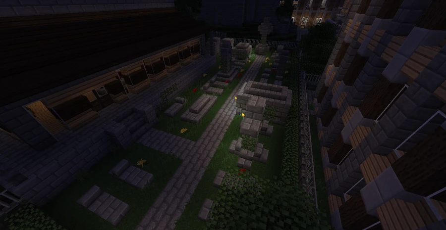

Plots Я Us
A funeral home south of Downtown that advertises low prices, offers a salad bar and operates a small cemetery.
Location and services
Plots Я Us Funeral Directors stands south of Downtown and presents itself as the leading funeral service provider in the greater Broville area. Its advertising promises “Final rights at a discount price”, combining funeral services with the city's commercial humor.



The salad bar
The company claims to be the third funeral home in the world to offer a complimentary salad bar. A customer testimonial captures the joke: “Was actually pretty good, considering my wife is dead and everything”. The salad bar becomes a selling point in the middle of bereavement.
Its own cemetery
Alongside funerals and fresh salads, Plots Я Us owns and operates a small cemetery where its customers are buried. It is presented as Plots Я Us Discount Cemetery. The reference to “customers” also carries a humorous allusion to Minecraft zombies.
See also
Sources and references
- v11.4.4 maps, signs, books and items World records
- Plots Я Us Funeral Directors · Broville Wiki Community archive
Text adapted and expanded from Plots Я Us Funeral Directors (contributors and history, revision 4977). Adapted text is available under CC BY-SA 3.0.